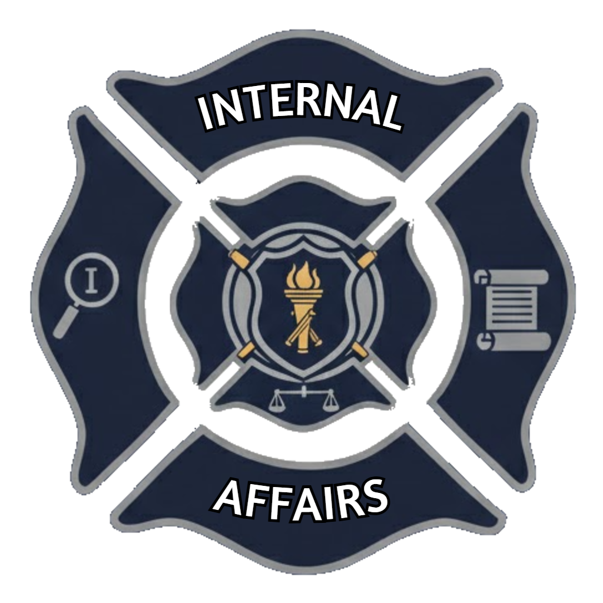
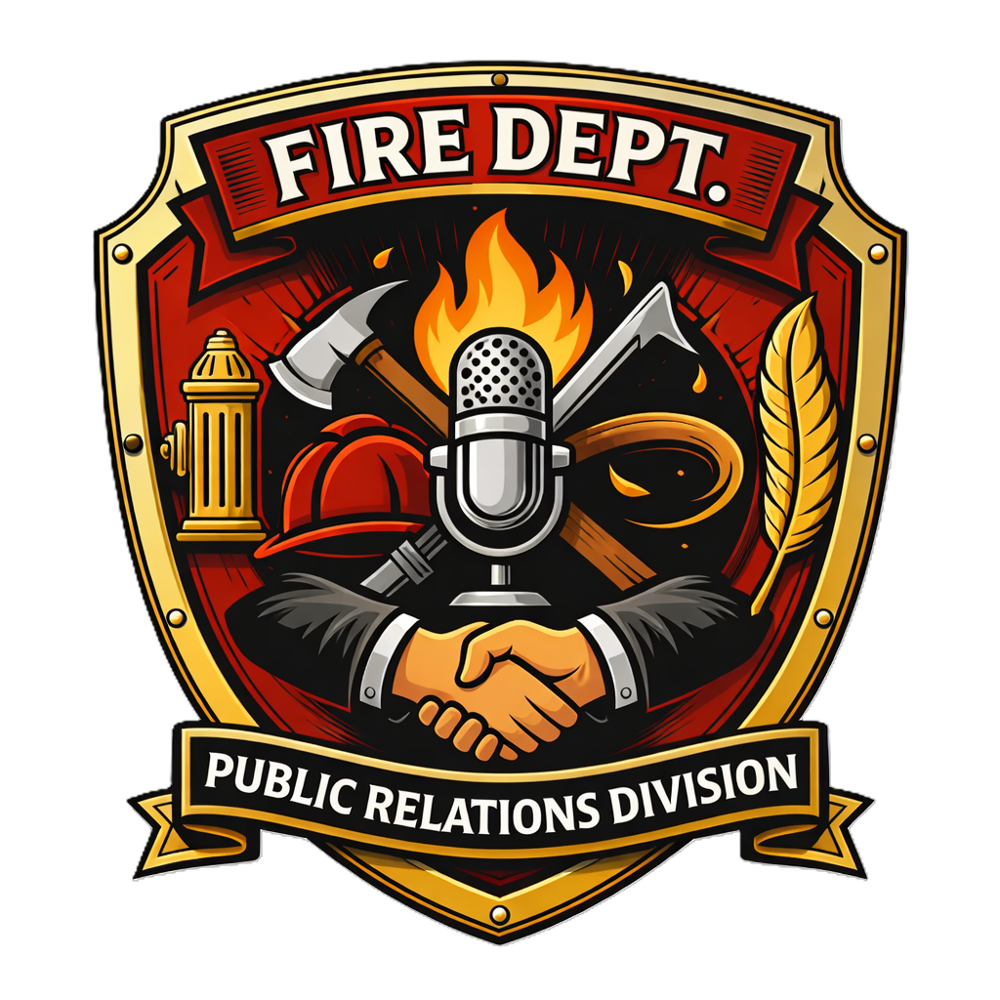
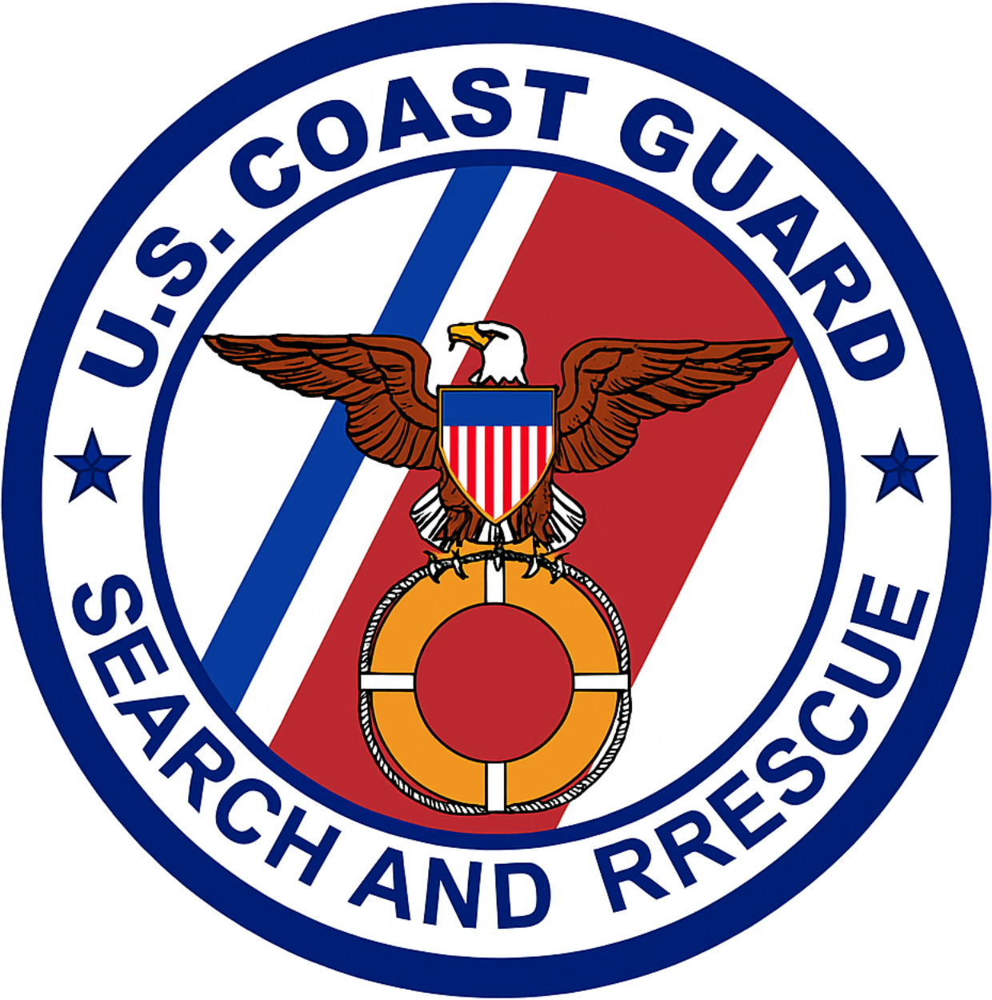

La División de Asuntos Internos del Departamento de Bomberos tiene como misión fortalecer la integridad, la transparencia y el cumplimiento normativo dentro de la organización mediante el uso de tecnologías avanzadas. Esta unidad se especializa en el análisis inteligente de datos internos para detectar irregularidades, prevenir conductas inapropiadas y garantizar el correcto desempeño del personal.

La Unidad de Rescate Aéreo del Cuerpo de Bomberos es una división especializada dedicada a la intervención en emergencias de difícil acceso, donde la rapidez, la precisión y la capacidad técnica son esenciales. Operando mediante aeronaves y equipos altamente cualificados, esta unidad actúa en rescates en altura, zonas remotas, accidentes de tráfico complejos y situaciones de emergencia en entornos adversos.

El Departamento de Relaciones Públicas del Cuerpo de Bomberos tiene como misión gestionar la comunicación institucional, fortalecer la imagen pública y mantener una relación cercana, transparente y eficaz con la ciudadanía. Esta unidad actúa como el principal canal de enlace entre el departamento, los medios de comunicación y la comunidad, garantizando que la información sea clara, veraz y oportuna.

La Unidad de Rescate Marítimo del Cuerpo de Bomberos es una división especializada en la intervención en emergencias en entornos acuáticos, incluyendo mares, ríos, embalses y zonas costeras. Su misión principal es salvaguardar la vida humana en situaciones de riesgo, actuando con rapidez, coordinación y precisión en escenarios donde las condiciones pueden ser altamente cambiantes y adversas.